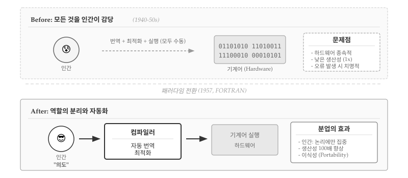
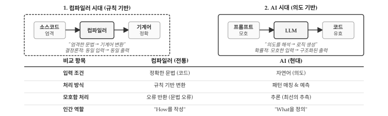
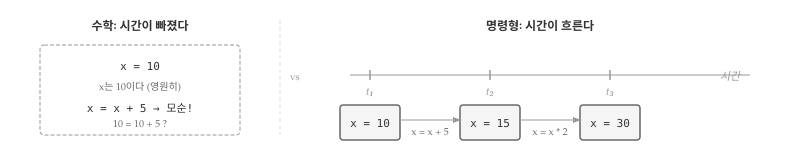
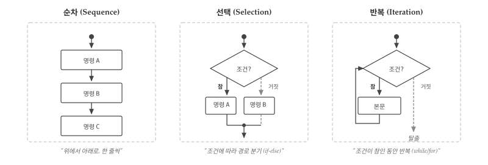
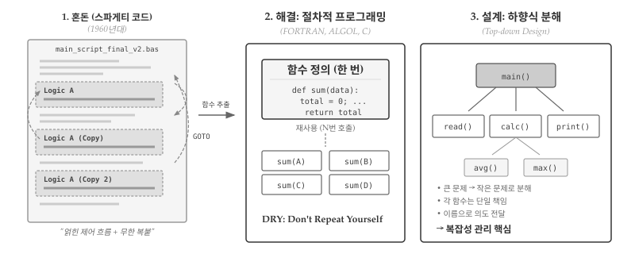
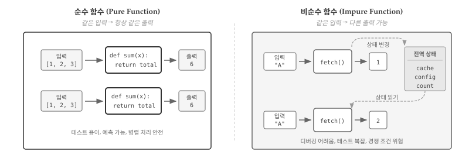
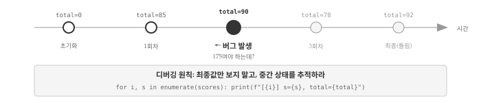
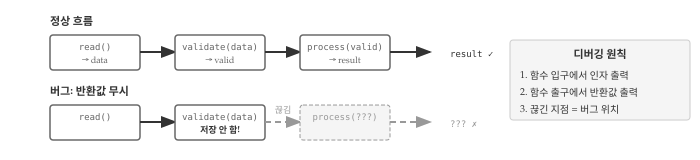

# 명령형의 핵심: 같은 변수, 다른 시점, 다른 값
x = 10 # t₁: x는 10
print(f"t₁ → x = {x}")
x = x + 5 # t₂: x는 15 (이전 값 10 + 5)
print(f"t₂ → x = {x}")
x = x * 2 # t₃: x는 30 (이전 값 15 × 2)
print(f"t₃ → x = {x}")t₁ → x = 10
t₂ → x = 15
t₃ → x = 30
명령형 프로그래밍(Imperative Programming)은 가장 오래되고 직관적인 패러다임이다. 컴퓨터에게 어떻게(How) 작업을 수행할지 단계별로 지시하는 방식이다. 절차적 프로그래밍(Procedural Programming)은 명령형의 확장으로, 반복되는 코드를 프로시저(함수)로 묶어 구조화한다.
두 패러다임은 밀접하게 연결되어 있어 함께 다룬다. 명령형이 무엇을 하라의 기본 단위라면, 절차적은 어떻게 조직할 것인가의 구조화 방법이다.
명령형 프로그래밍이 등장하기 전, 프로그래머는 기계어를 직접 작성했다. 0과 1의 나열, 또는 어셈블리 명령어를 한 줄씩 타이핑하며 CPU가 이해하는 언어로 말해야 했다. 생산성은 처참했다—월 수십 줄의 코드, 1비트 오류로 전체 프로그램 실패, 기계가 바뀌면 처음부터 재작성.

그림 32.1 에서 보듯이, 1957년 FORTRAN 컴파일러가 등장하면서 패러다임이 바뀌었다. 프로그래머는 더 이상 기계어를 직접 쓰지 않아도 됐다. x = x + 1처럼 인간의 의도에 가까운 문장을 작성하면, 컴파일러가 기계어로 번역해줬다. 역할 분리가 시작된 것이다.
컴파일러와 프로그래머의 분업이 생산성을 폭발시켰다. 프로그래머는 레지스터 번호나 메모리 주소 대신 변수 이름으로 사고할 수 있게 됐다. 같은 코드를 여러 기계에서 실행할 수 있게 됐고, 오타나 타입 오류를 컴파일러가 잡아줬다. 명령형 프로그래밍은 컴파일러가 번역해주는 고급 언어의 등장과 함께 태어났다.
1957년 컴파일러는 인간에게 문법(Syntax)을 요구했다. 한 글자라도 틀리면 거부—규칙은 절대적이고, 출력은 결정론적이었다.

2020년대 AI는 의미(Semantics)를 이해한다. 그림 32.2 에서 보듯이 “대략 이런 느낌”이라는 모호한 입력도 받아들이고, 맥락을 파악해 여러 해결책을 제시한다. 컴파일러가 절대 못 했던 것—“왜 이렇게 짰나요?”라는 질문에 답하고, 코드를 리뷰하고, 개선안까지 제안한다.
명령형 프로그래밍을 이해하려면 수학과 프로그래밍에서 “=”의 의미 차이부터 시작해야 한다.
수학에서 x = 10은 “x는 10과 같다”는 정의다. 한번 정의되면 x는 영원히 10이고, x = x + 5라는 식은 10 = 15를 의미하므로 모순이다. 그러나 프로그래밍에서 x = 10은 “x에 10을 넣어라”는 명령이다. x = x + 5는 “현재 x에 5를 더한 값을 다시 x에 넣어라”는 뜻이고, 완벽히 유효한 문장이다.
차이의 핵심은 시간이다. 수학에서 x는 시간과 무관한 상수지만, 명령형 프로그래밍에서 x는 시간에 따라 변하는 상태(State)다. t₁ 시점에서 x는 10이고, t₂ 시점에서 15이며, t₃ 시점에서 30이 된다. 변수는 “이름이 붙은 시간 함수”이고, 할당문은 그 함수의 값을 갱신하는 수단이다.

# 명령형의 핵심: 같은 변수, 다른 시점, 다른 값
x = 10 # t₁: x는 10
print(f"t₁ → x = {x}")
x = x + 5 # t₂: x는 15 (이전 값 10 + 5)
print(f"t₂ → x = {x}")
x = x * 2 # t₃: x는 30 (이전 값 15 × 2)
print(f"t₃ → x = {x}")t₁ → x = 10
t₂ → x = 15
t₃ → x = 30그림 32.3 에서 보듯이, 명령형의 본질은 상태 전이(State Transition)다. 각 명령문은 현재 상태를 입력받아 다음 상태를 출력하는 함수처럼 동작한다. 프로그램 전체는 이런 상태 전이의 연쇄다.
명령형 프로그래밍의 버그 대부분은 시점을 놓치는 것에서 비롯된다. “지금 x가 뭐지?”라는 질문에 “10”이라고 답했는데 실제로는 이미 15로 바뀌어 있었다면? 상태 추적 실패가 곧 버그다. 디버깅 장에서 상태 추적 기법을 자세히 다룬다.
상태가 명령형의 재료라면, 제어 흐름은 조리법이다. 어떤 순서로 명령을 실행하고, 언제 분기하며, 무엇을 반복할지 결정하는 것이 제어 흐름(Control Flow)이다.
1966년 뵘(Böhm)과 야코피니(Jacopini)는 컴퓨터 과학 역사상 가장 우아한 정리 중 하나를 증명했다 [1]. 순차, 선택, 반복—단 세 가지 구조만으로 모든 계산 가능한 알고리즘을 표현할 수 있다. 어떤 복잡한 프로그램도, 어떤 정교한 인공지능도, 결국 순차·선택·반복 블록의 조합이다.

그림 32.4 구조적 프로그램 정리가 혁명적이었던 이유는 goto의 추방 때문이다. 1960년대 코드는 goto로 점철되어 있었다—“37번 줄로 가라”, “조건이 참이면 158번 줄로 점프하라”. 코드를 읽으려면 줄 번호를 따라 미로를 헤매야 했고, 유지보수는 악몽이었다. 뵘-야코피니 정리는 수학적으로 증명했다: goto 없이도 모든 것을 표현할 수 있다. 2년 후 다익스트라(Dijkstra)의 “Go To Statement Considered Harmful” [2]이 방아쇠를 당기면서 구조적 프로그래밍 운동이 시작되었다.
세 구조의 본질은 단순하다. 순차는 위에서 아래로 한 줄씩—요리 레시피처럼 순서대로 실행한다. 선택은 갈림길에서 조건에 따라 경로를 고른다—“점수가 60 이상이면 합격, 아니면 불합격”. 반복은 조건이 참인 동안 같은 작업을 되풀이한다—1부터 100까지 더하기를 100줄이 아닌 3줄로.
# 세 구조의 조합: 성적 처리
scores = [85, 92, 78, 65, 90]
total, passed = 0, 0
for s in scores: # 반복: 각 점수에 대해
total += s
if s >= 70: # 선택: 70점 이상이면
passed += 1
avg = total / len(scores) # 순차: 평균 계산
print(f"평균 {avg:.1f}점, 합격 {passed}명")평균 82.0점, 합격 4명제어 흐름의 핵심 통찰은 실행 경로(Execution Path)다. 같은 프로그램이라도 입력에 따라 완전히 다른 경로를 탄다. scores에 90점짜리가 하나 더 들어오면 passed가 하나 늘어나고, 60점짜리가 들어오면 if 블록을 건너뛴다. 프로그램을 이해한다는 것은 가능한 모든 경로를 파악하는 것이다. 테스트가 모든 분기를 최소 한 번씩 실행해보는 것—분기 커버리지(Branch Coverage)—을 목표로 하는 이유도 여기에 있다.
1960년대 후반, 소프트웨어 산업은 심각한 위기에 직면했다. 프로그램 규모가 커지면서 동일한 로직이 수십, 수백 군데에 복사되었고, 단 한 줄을 수정하려면 프로그램 전체를 뒤져야 했다. 1968년 NATO 소프트웨어 공학 회의에서 공식화된 “소프트웨어 위기(Software Crisis)”의 한 원인이 바로 코드 중복이었다 [3].
절차적 프로그래밍은 반복되는 코드를 함수(function) 또는 프로시저(procedure)라는 이름 붙은 블록으로 추출하여 위기에 대응했다. 한 번 정의하고 여러 번 호출한다는 단순한 원칙이 혁명적 결과를 낳았다. FORTRAN(1957), ALGOL(1960), C(1972)가 함수 추상화를 체계화한 대표 언어다.

# 절차적 프로그래밍: 함수로 로직 추상화
def average(data):
"""리스트의 평균을 계산한다"""
total = 0
for x in data:
total += x
return total / len(data)
# 한 번 정의, 여러 번 사용
print(f"반 A 평균: {average([85, 90, 78]):.1f}")
print(f"반 B 평균: {average([92, 88, 76, 95]):.1f}")
print(f"반 C 평균: {average([70, 65, 80, 75, 85]):.1f}")반 A 평균: 84.3
반 B 평균: 87.8
반 C 평균: 75.0average() 함수는 “어떻게 평균을 구하는가”라는 세부 구현을 캡슐화한다. 호출하는 쪽은 “무엇을 원하는가”만 표현하면 된다. 로직 변경이 필요하면 함수 정의 한 곳만 수정하면 되고, 모든 호출 지점에 변경이 자동 반영된다. DRY(Don’t Repeat Yourself) 원칙의 기원이다.1
절차적 프로그래밍과 함께 등장한 설계 방법론이 하향식 설계(Top-down Design)다. 복잡한 문제를 먼저 큰 덩어리로 나누고, 각 덩어리를 다시 작은 문제로 분해하며, 최종적으로 각 조각을 함수로 구현한다. 그림 32.5 오른쪽 패널이 하향식 구조를 보여준다.
하향식 설계가 없던 시절 프로그래머는 모든 로직을 하나의 긴 코드 블록에 순서대로 작성했다. 성적 처리 프로그램이라면 입력 검증, 평균 계산, 최댓값 탐색, 결과 출력이 뒤섞여 수백 줄이 한 덩어리가 되었다. 어디서 무엇을 하는지 파악하려면 전체를 읽어야 했고, 한 부분을 수정하면 예상치 못한 곳에서 오류가 발생했다.
# 하향식 설계: 성적 처리 시스템
def validate(scores):
"""점수 유효성 검증"""
return all(0 <= s <= 100 for s in scores)
def calculate_stats(scores):
"""통계 계산"""
return sum(scores) / len(scores), max(scores)
def main():
"""전체 흐름 제어"""
scores = [85, 90, 78, 92, 88]
if validate(scores):
avg, highest = calculate_stats(scores)
print(f"평균: {avg:.1f}, 최고: {highest}")
main()평균: 86.6, 최고: 92하향식 설계의 강점은 main() 함수만 읽어도 프로그램 전체 흐름이 한눈에 들어온다는 점이다. “점수를 검증하고, 통계를 계산하고, 출력한다”라는 의도가 함수 이름으로 드러난다. 검증 로직에 버그가 있다면 validate() 함수만 살펴보면 되고, 통계 계산 방식을 바꾸려면 calculate_stats() 함수만 수정하면 된다. 각 함수가 단일 책임을 가지므로 변경의 영향 범위가 명확해진다.
절차적 프로그래밍이 코드 중복 문제를 해결했지만, 새로운 질문이 생긴다. 함수들이 서로 데이터를 공유해야 할 때 어떻게 할 것인가? 앞선 예제에서 validate()와 calculate_stats()는 각각 scores를 매개변수로 받았다. 그런데 함수가 많아지고 공유해야 할 데이터가 늘어나면, 매번 매개변수로 전달하는 방식이 번거로워진다. 바로 여기서 전역 변수라는 유혹이 등장한다.
명령형 프로그래밍의 본질은 상태 변경이다. 변수에 값을 할당하고, 그 값을 읽어서 계산하고, 결과를 다시 저장한다. 함수가 자신의 반환값 외에 외부 상태를 변경하는 것을 부작용(Side Effect)이라 하는데, 명령형에서는 부작용이 자연스럽게 발생한다.

그림 32.6 왼쪽의 순수 함수 sum()은 입력 [1, 2, 3]에 대해 항상 6을 반환한다. 첫 번째 호출이든 백 번째 호출이든, 아침에 실행하든 자정에 실행하든 결과는 동일하다. 함수 외부의 어떤 것도 읽지 않고, 어떤 것도 변경하지 않기 때문이다. 테스트가 단순해지고, 결과를 예측할 수 있으며, 여러 스레드에서 동시에 호출해도 안전하다.
오른쪽의 비순수 함수 fetch()는 상황이 다르다. 첫 번째 호출에서 입력 "A"에 대해 1을 반환하지만, 동시에 전역 상태(cache, config, count 등)를 변경한다. 두 번째 호출에서 같은 입력 "A"를 넣었는데도 결과는 2다. 함수가 전역 상태를 읽어서 이전 호출 이력에 따라 다른 값을 반환하기 때문이다. 캐시에 저장된 값을 반환하거나, 호출 횟수를 카운트하거나, 설정 값에 따라 동작이 달라질 수 있다. 같은 코드를 실행해도 결과가 달라지니 디버깅이 어렵고, 테스트를 작성하려면 전역 상태를 매번 초기화해야 한다. 멀티스레드 환경에서는 경쟁 조건(Race Condition) 위험까지 더해진다.
파이썬에서 리스트, 딕셔너리, 집합 같은 가변 객체(Mutable Object)를 함수에 전달하면 복사본이 아닌 참조가 전달된다. 함수 내부에서 해당 객체를 수정하면 호출자의 원본 데이터가 함께 변경된다. 의도한 동작이라면 문제없지만, 대부분의 경우 호출자는 자신의 데이터가 수정될 것이라 예상하지 않는다.
# 참조에 의한 전달: 원본 데이터 오염
def get_top_scores(scores, n=3):
"""상위 n개 점수를 반환한다"""
scores.sort(reverse=True) # 부작용: 원본을 내림차순 정렬
return scores[:n]
original = [85, 92, 78, 90]
top3 = get_top_scores(original)
print(f"상위 3개: {top3}")
print(f"원본 데이터: {original}") # [92, 90, 85, 78] - 순서가 바뀜!상위 3개: [92, 90, 85]
원본 데이터: [92, 90, 85, 78]get_top_scores()는 상위 점수만 반환하면 되는 단순한 함수처럼 보인다. 그러나 내부에서 sort()를 호출하면서 원본 리스트의 순서가 뒤바뀐다. 호출 직후에는 문제가 없어 보인다—상위 3개 점수도 정확히 반환된다. 그러나 수십 줄 뒤에서 original을 “입력 순서대로” 처리하려 할 때 버그가 터진다. 디버깅은 original을 사용하는 지점에서 시작하지만, 범인은 한참 전에 호출된 get_top_scores()에 숨어 있다.
해결책은 원본을 건드리지 않는 것이다. sorted() 함수는 원본을 수정하지 않고 새로운 정렬된 리스트를 반환한다.
# 원본 보존: sorted() 사용
def get_top_scores_safe(scores, n=3):
"""상위 n개 점수를 반환한다 (원본 보존)"""
return sorted(scores, reverse=True)[:n]
original = [85, 92, 78, 90]
top3 = get_top_scores_safe(original)
print(f"상위 3개: {top3}")
print(f"원본 데이터: {original}") # [85, 92, 78, 90] - 보존!상위 3개: [92, 90, 85]
원본 데이터: [85, 92, 78, 90]list.sort()와 sorted()의 차이를 모르면 버그를 만들기 쉽다. 비슷한 쌍으로 list.reverse()와 reversed(), list.append()와 + [item]이 있다. 원본을 보존해야 하는 상황에서는 항상 새 객체를 반환하는 함수를 선택하라.
함수 매개변수에 기본값을 지정하면 호출 시 인자를 생략할 수 있어 편리하다. 그러나 기본값으로 가변 객체를 사용하면 예상치 못한 동작이 발생한다. Python 개발자라면 한 번쯤 겪는 함정이다.
# 버그: 가변 객체를 기본값으로 사용
def add_item(item, items=[]):
items.append(item)
return items
print(add_item("사과"))
print(add_item("바나나"))
print(add_item("포도"))['사과']
['사과', '바나나']
['사과', '바나나', '포도']첫 호출에서 ['사과']가 나오는 건 예상대로다. 그런데 두 번째 호출에서 ['바나나']가 아닌 ['사과', '바나나']가 나온다. 세 번째는 ['사과', '바나나', '포도']. 마치 함수가 이전 호출을 “기억”하는 것처럼 동작한다.
원인은 Python이 함수를 정의할 때 기본값을 평가한다는 점이다. def add_item(item, items=[]) 문장이 실행되는 순간 빈 리스트 []가 딱 한 번 생성되고, 이후 모든 호출이 그 리스트를 공유한다. 호출할 때마다 새 리스트가 만들어지는 게 아니다.
가변 기본값 버그가 까다로운 이유는 한 번 테스트해서는 잡히지 않기 때문이다. add_item("사과")를 호출하고 결과를 확인하면 ['사과']가 나온다—완벽히 정상이다. 버그는 같은 함수를 여러 번 호출할 때만 드러난다. 단위 테스트(unit test)가 매번 새 프로세스를 띄우지 않는 한, 테스트 실행 순서에 따라 통과하기도 실패하기도 하는 불안정한(flaky) 테스트가 된다.
해결책은 None을 기본값으로 사용하고 함수 내부에서 새 객체를 생성하는 것이다. None 기본값 패턴은 Python 커뮤니티에서 관용구(idiom)로 자리 잡았다.
# 표준 패턴: None을 기본값으로
def add_item_fixed(item, items=None):
if items is None:
items = [] # 호출마다 새 리스트 생성
items.append(item)
return items
print(add_item_fixed("사과"))
print(add_item_fixed("바나나"))['사과']
['바나나']items=None으로 선언하고 함수 본문에서 if items is None: items = []로 처리하면 매 호출마다 독립적인 리스트가 생성된다. 빈 딕셔너리 {}나 빈 집합 set()도 마찬가지다. 가변 객체를 기본값으로 직접 사용하지 마라.
전역 변수는 프로그램 어디서든 접근하고 수정할 수 있어 편리해 보인다. 그러나 규모가 커지면 어디서 값이 변경되었는지 추적하기 어려워진다. 함수 A가 전역 변수를 수정하고, 함수 B가 그 값에 의존한다면, A와 B 사이에 보이지 않는 결합(coupling)이 생긴다. 특히 멀티스레드 환경에서는 경쟁 조건(Race Condition)이 발생할 수 있다. 가능하면 전역 변수 대신 함수 매개변수와 반환값을 사용하라.
절차적 프로그래밍은 작은 규모에서 잘 동작한다. 그러나 프로그램이 커지면 구조적 한계가 드러난다. 핵심 문제는 데이터와 함수의 분리다.
# 학생 한 명: 문제없어 보인다
student1_name = "김철수"
student1_scores = [85, 90, 78]
def get_average(scores):
return sum(scores) / len(scores)
def is_passing(scores, threshold=60):
return get_average(scores) >= threshold
print(f"{student1_name}: 평균 {get_average(student1_scores):.1f}")김철수: 평균 84.3학생이 한 명일 때는 깔끔하다. 그런데 학생이 늘어나면?
# 학생 세 명: 변수가 폭발한다
student1_name = "김철수"
student1_scores = [85, 90, 78]
student1_grade = "2학년"
student2_name = "이영희"
student2_scores = [92, 88, 95]
student2_grade = "2학년"
student3_name = "박민수"
student3_scores = [78, 82, 80]
student3_grade = "3학년"
# 세 학생의 평균을 출력하려면?
for name, scores in [(student1_name, student1_scores),
(student2_name, student2_scores),
(student3_name, student3_scores)]:
print(f"{name}: {get_average(scores):.1f}")김철수: 84.3
이영희: 91.7
박민수: 80.0학생이 100명이면 student1_name부터 student100_name까지 300개의 변수가 필요하다. 더 심각한 문제는 연결 관계다. student47_name과 student47_scores가 같은 학생을 가리킨다는 보장이 어디에도 없다. 복사-붙여넣기 한 번 잘못하면 47번 학생 이름에 48번 점수가 붙는다.
# 흔한 실수: 잘못된 연결
student47_name = "정수진"
student47_scores = [88, 91, 85]
student48_name = "최동훈"
student48_scores = [75, 80, 78] # 복사하다가...
# 어딘가에서 실수
result = f"{student47_name}: {get_average(student48_scores):.1f}" # 버그!
print(result) # 정수진 점수가 아닌 최동훈 점수정수진: 77.7이름과 점수를 묶어 딕셔너리로 관리하면 나아 보인다. 그러나 속성이 늘어나면 딕셔너리도 복잡해진다. 학년, 연락처, 출석률, 과목별 점수… 키 이름을 일일이 기억해야 하고, 오타 하나에 KeyError가 터진다.
# 딕셔너리: 구조는 나아졌지만...
students = [
{"name": "김철수", "scores": [85, 90, 78], "grade": "2학년"},
{"name": "이영희", "scores": [92, 88, 95], "grade": "2학년"},
{"name": "박민수", "scores": [78, 82, 80], "grade": "3학년"},
]
# 키 오타 한 번이면 끝
for s in students:
avg = get_average(s["scores"])
# print(s["Score"]) # KeyError: 'Score' - 대소문자 실수
print(f"{s['name']}: {avg:.1f}")김철수: 84.3
이영희: 91.7
박민수: 80.0절차적 패러다임의 근본 한계가 여기 있다. 데이터 구조와 해당 데이터를 다루는 함수가 분리되어 있다. get_average()는 어떤 리스트든 받아들인다—학생 점수든, 기온 데이터든, 주가든. 유연해 보이지만, 학생 데이터에만 적용해야 하는 비즈니스 로직을 강제할 방법이 없다.
객체지향 프로그래밍(OOP)은 데이터와 함수를 하나로 묶어 분리 문제를 해결한다. 다음 장에서 같은 학생 관리 예제를 OOP로 다시 작성하면서 차이를 확인한다.
명령형 프로그래밍에서 버그는 상태 변화에서 발생한다. 변수가 언제 어떤 값으로 바뀌었는지 추적하지 못하면 원인을 찾을 수 없다. 그림 32.7 은 전형적인 명령형 버그를 보여준다. 최종값 92만 보면 뭐가 잘못됐는지 알 수 없다. 중간 상태를 추적해야 2회차에서 175가 아닌 90이 된 걸 발견한다.

# 버그: += 대신 = 사용
scores = [85, 90, 78, 92]
total = 0
for i, s in enumerate(scores):
total = s # 버그! 덮어쓰기
print(f"[{i}] s={s}, total={total}") # 상태 추적
print(f"최종: {total}") # 예상 345, 실제 92[0] s=85, total=85
[1] s=90, total=90
[2] s=78, total=78
[3] s=92, total=92
최종: 92+=와 =의 차이는 코드 한 글자지만 결과는 완전히 다르다. 반복문 안에서 변수가 어떻게 변하는지 print()로 출력하면 버그가 드러난다. 루프 경계 오류(off-by-one), 변수명 섀도잉도 같은 방식으로 찾는다—중간 상태를 찍어보면 된다.
함수를 사용하면 버그 유형이 달라진다. 그림 32.8 처럼 함수는 데이터 파이프라인이다. 반환값을 저장하지 않으면 데이터가 사라진다. 호출 순서가 틀리면 잘못된 입력으로 처리한다. 버그를 찾으려면 데이터가 어디서 끊겼는지 추적하라.

# 데이터 흐름 추적
def validate(data):
print(f" validate 입력: {data}")
result = all(x >= 0 for x in data)
print(f" validate 반환: {result}")
return result
def process(data):
print(f" process 입력: {data}")
result = [x * 2 for x in data]
print(f" process 반환: {result}")
return result
data = [-1, 2, 3]
print("1. validate 호출")
is_valid = validate(data) # 반환값 저장!
print("2. process 호출")
if is_valid:
output = process(data) # 순서 확인!
print(f"결과: {output}")
else:
print("유효하지 않은 데이터")1. validate 호출
validate 입력: [-1, 2, 3]
validate 반환: False
2. process 호출
유효하지 않은 데이터함수 입구와 출구에서 값을 출력하면 데이터가 어디서 끊기는지 보인다. validate(data) 호출 후 반환값을 저장하지 않았다면? is_valid가 없으니 다음 단계로 넘어갈 수 없다. 호출 순서가 바뀌었다면? 검증 없이 처리가 먼저 실행되어 잘못된 결과가 나온다.
상태 추적용 print()에는 [DEBUG], >>>, ### 같은 접두사를 붙여라. 나중에 일괄 삭제하기 쉽다. 일명 “추적자 탄환(tracer bullets)”[4]이라 부르며, 코드가 예상대로 동작하는지 빠르게 확인하는 실용적 기법으로 권장한다.
컴퓨터는 본질적으로 명령형 기계다. CPU는 메모리에서 값을 읽고, 연산하고, 다시 쓴다. 함수형이든 객체지향이든, 결국 기계어 수준에서는 상태 변경의 연속이다. 명령형 패러다임을 깊이 이해해야 다른 패러다임이 “무엇을 숨기고 있는지” 알 수 있다. 추상화의 이면을 모르면 성능 문제나 예상치 못한 버그 앞에서 무력해진다.
“상태는 보이지 않는다.” 코드만 봐서는 프로그램의 현재 상태를 알 수 없다. 실행 이력(history)이 상태를 결정하기 때문이다. total = 90이라는 코드가 있다면, 여기에 도달하기까지 어떤 경로를 거쳤는지에 따라 버그 여부가 갈린다. 디버깅이 어려운 이유가 여기에 있다. 코드를 읽는 것이 아니라 시간을 추적해야 한다.
절차적 프로그래밍이 적합한 영역은 분명히 존재한다. 일회성 스크립트, 데이터 파이프라인, 빌드 자동화처럼 “순서대로 처리하면 끝”인 작업에서는 굳이 클래스를 만들 필요가 없다. 오히려 단순한 함수 조합이 더 읽기 쉽고 유지보수하기 쉽다. 모든 문제에 객체지향을 적용하려는 것은 망치를 든 사람이 모든 것을 못으로 보는 것과 같다.
“부작용을 최소화하라”는 조언은 불완전하다. 진짜 원칙은 “부작용을 명시적으로 만들어라”다. 함수 이름에 부작용을 드러내고(update_, save_, modify_), 부작용이 일어나는 지점을 코드 한 곳에 모아라. 부작용 자체가 악이 아니다. 어디서 일어나는지 모르는 것이 악이다.